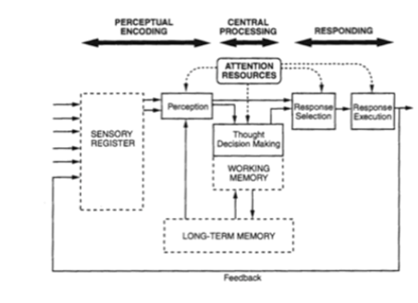
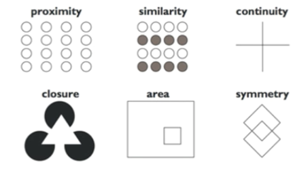
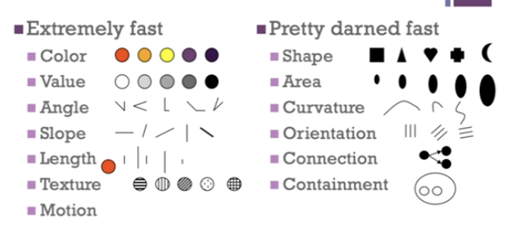

Perception
#SI588
Definition
- Info about distal stimuli (world around us) received by sensory organ as a proximal stimulus.
Wickens HIP Model

Important senses for HCI
There are many senses around us. Ex. Touch, Hearing, Smell, Taste, Time, Agency, Familiarity.
For HCI:
- Vison
- Audition
- Touch
- Proprioception
- Smell ( Like bomb detection)
Sight/Vision
Rods - 120million rods, can’t see clearly, help with night vision
Cones - 6-7 million, in the fovea, have 3 types (H,M,L), responsible to color
Color Constancy
No matter how bright/dim the light is, the color will still be the color we see. We see colors based on the
surroundings.
Color Discrimination
How good we can tell apart colors depends on how where the two object is presented (distance, size).
Gestalt Principles

Tips on Design
For Periphery(Good with motion and night vision)
- Pop out, moving, big and bright (without annoying the user)
- Only for important message
For Color
- Make the contract as different as possible (make the target POP-OUT)
- Use colors that are friendly for color-blind
- Turn it into grey scale to check
Pop-Out Affect
- Make the target stand from the environment
- Size
- Color
- Shape
- Orientation
